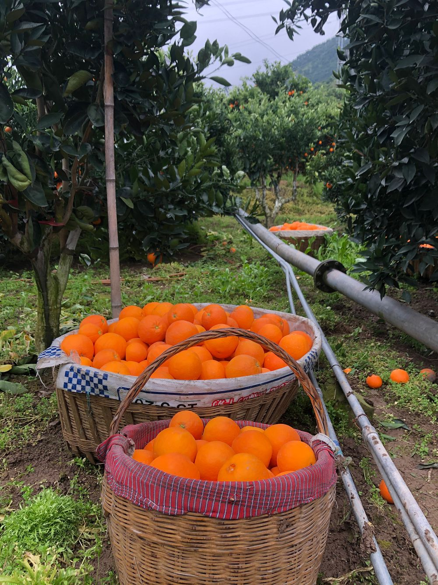

解救湖北脐橙
原文链接 备份链接 作者 | 黎明 编辑 | 魏佳 果农周金桥做好最悲观的打算：脐橙要是卖不出去，就把城里的房子卖了。总得活着。 他生活了近50年的秭归县牛岭村，随着湖北省，成了中国新冠病毒疫情版图上颜色最深的那一块。疫区转眼成了禁区， …

湖北疫区农产品出省通道恢复，一条“助农抗疫”数字供应链浮出水面。阿里巴巴正在大力投资数字农业“新基建”，并在疫情期间将这种即插即用的数字化能力向全社会开放，帮助各地抗疫和复工
莫云 | 文
3月2日，湖北省秭归县的40吨脐橙，在疫情发生后，首次运出湖北，发往全国。这次脐橙的命运得以逆转，靠的是以数字化技术打造的新基础设施。
“疫情刚爆发的时候，北京、山东的农产品批发市场都叫停了湖北的农产品进入市场。秭归脐橙正是丰收的时候，却卖不出去。”秭归县农业农村局局长兰华锋接受《财经》记者采访时说。
叫停的主要原因，是对新冠病毒的恐惧和防疫。“实际上，病毒的存活需要宿主，植物和人完全不同，植物里没有病毒的宿主，病毒是不会在植物上存活的。”中国工程院副院长、“柑橘院士”邓秀新对《财经》记者解释。
除了市场对湖北农产品的犹疑，采摘、加工、运输、销售的各个环节的人手短缺、物流不畅，也是限制秭归脐橙外销的客观因素。受疫情影响，秭归全县至少有17万吨成熟的脐橙无法采摘和销售。
秭归县紧急向全国的水果经销商、电商企业发出求助函，希望它们能让这批脐橙免于滞销的结局。很快，阿里巴巴伸出援手，和秭归县联手打造出一条特殊时期的数字供应链，解决了燃眉之急。目前，首批通过数字供应链运出的秭归脐橙已经上架淘宝和盒马鲜生等销售平台。
成熟的秭归脐橙通过阿里巴巴数字农业供应链走向全国
据了解，秭归的求助信息，是疫情发生以来阿里巴巴收到的众多滞销信息之一。为了帮助各地及时销售，阿里巴巴在全国20个省份开通“爱心助农专线”。截至3月5日，该专线已售出9万吨滞销农产品。
在疫情期间帮农民对接产销是一个短期目标，而从长期来看，将农业技术与阿里数字技术合力，提高农业的数字化水平，才能帮助“三农”利用互联网和数字技术基础能力去提升自身的抗压性和竞争优势。
突如其来的疫情之下，传统的农产品线下销售模式暴露出了其局限性和脆弱性。秭归脐橙最终“获救”，靠的是阿里用数字化技术所打造的供应链。从田间地头的采摘，一直到送上全国各地居民的餐桌，这套看不见的基础设施都在发挥作用。

果农李发山的脐橙已经通过阿里巴巴卖出三分之一
近年来，技术的进步推动着经济发展模式的转型，旧有的基础设施已经无法完全满足数字化经济的新需求。秭归脐橙的故事表明，以5G网络、云计算、人工智能为代表的新基础设施建设已经刻不容缓。
农产品市场谈“湖北”色变
1月23日上午10点，武汉实行“封城”。这一举措让全国民众瞬间意识到新冠疫情的严重性，浙江、广东、湖南启动重大突发公共卫生事件一级响应。各地均采取了严格的防疫措施，受到限制的不仅是湖北人，还有湖北的农产品。
根据兰华锋提供给《财经》记者的一份文件显示，1月23日，山东的临沂嘉兴水果市场向各经营部发出通知：为加强新冠病毒防控，即日起，禁止湖北水果物流车辆进入临沂嘉兴水果市场。
第二天1月24日，据《新京报》报道，全国最大的农产品集散地北京新发地市场，已经没有来自武汉的蔬菜和水果，并暂停湖北农产品进入新发地市场。
“我们看到这些消息很担心，”兰华锋说，“这样的文件起了一些不好的作用，很多市场虽然没有明文规定，但实际上开始抵制湖北的农产品。”秭归县县长杨勇亦称，“我们的橙子口感很好，但受疫情影响，消费者会有担忧。”
被称为“中国脐橙之乡”的湖北秭归也不能幸免。秭归县地处湖北省西部，位于长江西陵峡畔三峡大坝库首，是著名的中国脐橙之乡，现已形成春有伦晚脐橙、夏有夏橙、秋有早红脐橙、冬有纽荷尔脐橙，一年四季有鲜橙供应的生产格局。据秭归县农业农村局统计，2月初，全县在树上已充分成熟的纽荷尔脐橙、桃叶橙、椪柑有4.85万吨，此外还有2月即将上市的柑橘有2.5万吨，4月底至5月中下旬即将上市的伦晚脐橙7万吨、夏橙3万吨。

2月初，秭归县在树上已充分成熟的各类柑橘有4.85万吨。
脐橙的销路受阻，“柑橘院士”邓秀新的手机被打爆了。在秭归，许多果农都有邓秀新的手机号码，果子不甜，果子滞销，一个电话就找“邓院士”。
“水果不长腿，不会传染人。”邓秀新赶忙“辟谣”：“通过科学防疫，严格品控，湖北出来的水果是安全的。”他说，水果和蔬菜是不可能与人传染的，暂停物流，只是担心通过运输水果的人携带病毒。
邓秀新对秭归有特殊的感情。自上世纪80年代开始，他和团队一直扎根秭归，帮助农户解决技术难题，协助政府对接产业资源，四处奔走“推销”。他从国外引进伦晚柑橘品种种在当地，又引来贷款为当地建立最先进的分选中心，带领秭归从柑橘种植之乡走向柑橘文化旅游之乡。

20年前，秭归移民将脐橙移栽到新的家园
接到农户的求助后，邓秀新和秭归县决定向阿里巴巴反馈。2月20日，秭归县农业农村局致函阿里巴巴，希望提供采购和销售支持。一个多星期之后，时机逐渐成熟。2月29日，湖北省首次发布新冠肺炎疫情风险等级评估报告，秭归被列为11个低风险县（市、区）之一。
兰华锋松了口气：“阿里巴巴能帮我们销售脐橙，不仅是能解决销售问题，更重要的是在疫情下，打消消费者对湖北水果的心理顾虑。阿里巴巴帮我们做了背书——既然能销售，就是放心农产品。”
数字供应链从田间地头开始
当前疫情下， 要把湖北农产品运出湖北、销往全国，一方面要打消市场的疑虑，另一方面，需要解决采摘、加工、运输、销售的各个环节的难题。
2月初，秭归县发出公开求助函，“诚挚邀请全国水果经销商来秭归采购、销售秭归脐橙，为湖北的疫病防控、秭归柑农增收献出一份力量”，但是此时此刻，批发商并不愿意冒险进入湖北。传统批发商需要进入产地看到货品、见面交易；目前看不到货，物流不通、品控难以落地，他们心有余而力不足。
秭归是阿里巴巴在全国的首个数字农业基地。从2018年起，秭归逐步建立起一条数字供应链，在生产、品控、运输、销售各个环节通过数字化技术提高效率；但由于疫情的影响，这条供应链也一度中断。
在接到秭归县的求助后，阿里巴巴决定紧急重建数字供应链。

2018年，阿里巴巴在湖北秭归建立首个数字农业基地。
秭归脐橙的外销，重点不仅在最终的“销”，田间地头的采摘，就极大程度地考验当地对于防疫和复工的协调能力。
“农民不敢出村。当地政府也不敢让人员大规模聚集，很多村还处于封村的状态。”阿里巴巴数字农业事业部高级运营专家王巍对《财经》记者说，“阿里巴巴的数字农业供应链，能把销售端的订单提前汇总起来，通过这个销售计划，倒推生产端的采摘，计算出需要多少人员，然后和秭归县政府联动起来，组织他们返回果园。”
在采摘时也不放松防疫措施，每片果园严格遵循不超过15人的规定。兰华锋说：“我们一手抓防疫，一手抓生产。实行分区采摘，果农必须戴口罩，每天测两次体温。”
采摘之后，脐橙需要被运往当地的加工厂进行拣选和包装，根据品质的差异，分别在盒马鲜生、电商平台和湖北本地销售。在这个环节，同样需要分拣和打包的工人。为了招揽足够的人手，阿里巴巴以高价聘请当地村民复工。
对于品控问题，钉钉上线“云品控”，从农户采摘到进入加工厂全程跟拍，监控农户防疫防护措施，监控采摘过程的规范，监控橙子的果径、光滑度，并现场云评测酸甜度。除云品控之外，随机抽检的脐橙，还被快递至阿里数字农业事业部品控中心，由阿里巴巴和第三方专业品控机构进行测定。
在物流运输方面，杨勇称， “受疫情影响，很多需要在荆州中转的快递公司只是跃跃欲试，路没有完全走通。”为此，阿里巴巴旗下的菜鸟联合物流伙伴，为秭归专门打造了一条出省绿色通道。在特殊时期，物流成本上涨明显，菜鸟与其体系内的中通、申通、圆通开启公益联动机制，在保证司机收益的前提下，尽量降低物流成本。
“从3月3日开始，秭归脐橙已经往全国发出八万斤，武汉的盒马鲜生也已经送货了。”王巍说，这批水果的销售将持续至5月。
信息化手段促农产品线上销售
“数字化应用到农业领域，主要作用之一是让信息对称。”邓秀新说，以前农产品在山沟沟里，农民不知道谁想要，农产品都是运到大城市的批发地，给到零售商，再到商店，经过几道手，才到消费者。现在电商平台架起了生产者和消费者之间的桥梁。更直接便捷。他认为，“数字农业肯定是农业发展的大方向。”
目前，秭归已成为湖北省电商化水平最高的县域之一。据秭归县农业农村局数据，2018年，有1592家电商通过阿里销售秭归脐橙，秭归脐橙单品销售问鼎全国第一。
自2018年阿里巴巴启动“亩产一千美金计划”、在秭归落地第一个数字农业基地之后，2019年又设立阿里农业办公室，统筹由淘宝、天猫、支付宝、盒马、菜鸟等20多个业务构成的数字助农网络。
这一数字农业体系在此次疫情下发挥了特殊的作用。2月6日，阿里巴巴发布“爱心助农计划”，设立10亿“爱心助农基金”，聚合数字经济体力量，为全国滞销农产品紧急打造“爱心助农专线”，线上线下直供全国市场。
2月18日下午，国务院联防联控机制召开新闻发布会，介绍“菜篮子”稳产保供工作情况。农业农村部市场与信息化司副司长宋丹阳表示，充分运用信息化手段，促进农产品线上销售是对接产销的四大重点举措之一。

在阿里巴巴的数字农业基地，农民用手机“种菜”。
在疫情期间帮农民对接产销是一个短期目标，而从长期来看，将农业技术与阿里数字技术合力，提高农业的数字化水平，才能帮助“三农”利用互联网和数字技术基础能力去提升自身的抗压性和竞争优势。
目前，农业在中国数字经济发展中仍处于落后位置。突如其来的疫情，或许让越来越多的农业从业者意识到数字基础设施在产业链中无法替代的功能和优势。疫情发生后，各地自发涌现上万个蔬菜大棚“直播间”， 2月15日史上规模最大“村播日”，1万名农民主播集体开播卖菜。在数字农业时代，数据成为新农资，手机成为新农具，直播成为新农活。而像钉钉这类智能移动办公平台，也为农民向“爱心助农热线”反馈农产品滞销信息提供了一个高效的渠道。一些过去只走线下的农产品，紧急对接上了淘宝。
数字乡村已成为国家战略。农业农村部、中央网络安全和信息化委员会办公室1月20日印发的《数字农业农村发展规划（2019-2025年）》指出，要发挥互联网企业的核心带动作用，用数字化引领驱动农业农村现代化。其中一个预期目标是，农业数字经济占农业增加值比重从2018年的7.3%增长到2025年的15%，年均增速得达到10.8%。
走农业走向数字化的过程中，对于已经拥有庞大数字技术基础能力的科技企业而言，大有可为。阿里巴巴集团董事局主席兼首席执行官张勇表示，疫情之后，新一代数字基础设施建设将成为新的发展方向。 数字基础设施建设就是新基建，正在成为新的投资和发展方向。“数字化的巨大价值已经深入人心，阿里巴巴不但要在危难中承担更多社会责任，更要为下一步经济发展创造机会。”
原文链接 备份链接 作者 | 黎明 编辑 | 魏佳 果农周金桥做好最悲观的打算：脐橙要是卖不出去，就把城里的房子卖了。总得活着。 他生活了近50年的秭归县牛岭村，随着湖北省，成了中国新冠病毒疫情版图上颜色最深的那一块。疫区转眼成了禁区， …
原文链接 备份链接 总结这次疫情危机中暴露出来的经验和教训，如何使得数字技术与社会治理加以融合，进而推动组织变革，是值得多方研究的课题。 文 | 李星郡 编辑 | 朱弢 空格 此次新冠肺炎疫情，数字技术第一次全链条、全方位、全周期地介入疫 …
原文链接 备份链接 文/西湖君 编辑/大风 三台快递打单器在不停地吐出新单据。十几分钟的时间里，来自全国的订单疯狂地涌进后台，地上已经堆满了好几层快递单据。站在打单器旁边的，是浙江衢州市市长汤飞帆。而直播镜头的另一端，是53万拼多多用户。 …
原文链接 备份链接 新冠肺炎疫情下，重疫区湖北面临较为严重的医疗和生活物资短缺现象，口罩、防护服、护目镜、新鲜瓜果蔬菜都需要外界支援，多数企业伸出援手帮助疫区渡过难关。然而，在形势危急的当下，如何迅速调取物资并送往一线投入使用成为关键。 …
原文链接 备份链接 有蔬菜农业生产基地和企业在接受南都周刊记者采访时表示，受新冠肺炎疫情影响，田里蔬菜无法及时收割与销售，焦心未来收入存在中断风险。 _ 记者| 王晓珊 实习生 | 甘笠男 编辑 | 盛倩玉 黄冈市黄梅县大河镇袁夫稻田 水 …